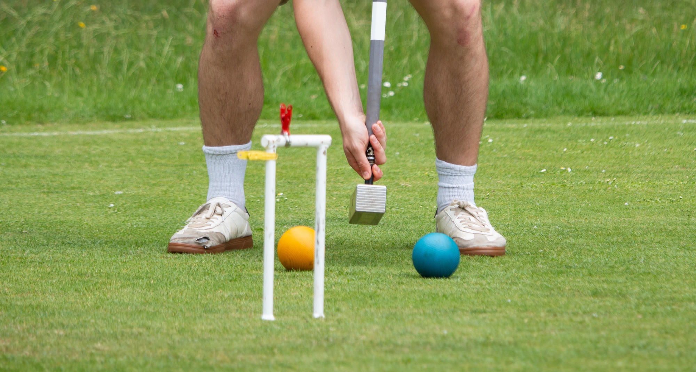

The historic University Croquet Club exists to promote croquet within the University at all levels. Whether you would like a social pastime or the challenge of competitive croquet - we are here to accommodate you.
Members have access to two full-size courts in the University Parks, our members have access to two full-sized croquet courts in the scenic University Parks ( how to find us ), which are equipped to championship standard. Members can have their own key to the croquet hut ensuring that they have access to the courts and equipment. All required equipment is supplied and players only need bring flat-soled shoes.
The Club welcomes players of all standards whether you are an absolute beginner or experienced player. As well as providing the facilities for a gentle game of croquet in the pleasant surroundings of the University Parks, we also offer coaching and arrange fixtures to suit all skill levels. Fixtures are great fun - the Club travels extensively to play other clubs in this country and abroad.
Croquet can accommodate players of different ages, backgrounds and standards. Games can be played where the weaker player is given extra turns to even the odds of winning. Consequently under handicap play you can be playing against a world-class player and both sides have a good game. The Club has official referees and handicappers who also assist in the coaching.
Club Evenings
Wednesday evenings (5 p.m. onwards) are Club evenings when there is a high likelihood of meeting other players and committee members at the courts. This continues throughout the summer vacation.
Beginners' Evenings
On Tue wk1, Thu wk1 and Tue wk2 we hold free coaching sessions from (5 p.m. onwards). Non-members are welcome to attend these and beginners are particularly encouraged to come along. On Tuesday of week 3 there is a further members-only coaching session. Committee members and more experienced players will be available to coach most standards of player. (This is the only occasion for non-members to try out playing on the courts. The courts do, of course, remain open to all members during this time.)
Subscriptions
Membership is open to both University and non-University members. We have two subscription durations, term time & full season, to allow for the fact that undergraduates are not around over the summer.
| Status | Membership | Court Use | Total |
| OU Undergraduate | Student | Term-time only (8 weeks) | £12 |
| OU Graduate | Student | Full season | £24 |
| OU member, non-student | OU, non-student | Full season | £36 |
| Non-University member | Non-university | Full season | £56 |